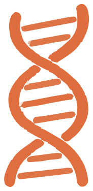

01
识别靠 Bs2
辣椒来的传感器 NLR，像哨兵一样认出 AvrBs2 效应蛋白。
传感器 NLR
传感器 + 辅助 NLR，把警报传下去。
答案是不一定。识别靠 Bs2，传警报靠 NRC；两个基因一起，免疫才启动。

影片已完成。看完可以直接进入接力台，亲手接一次力。
识别 → 中继 → 放大，缺一环都不行。
辣椒来的传感器 NLR，像哨兵一样认出 AvrBs2 效应蛋白。
NRC 不认敌人。它接收 Bs2 的信号，把警报放大成下游防御。
只转 Bs2 不行，只转 NRC 也不行；两个基因一起，防线才接通。
把两张基因卡拖进水稻细胞；手机上也可以先点卡片，再点空位。先放 Bs2，还是先放 NRC？试试看。
先预测，再揭晓。看看哪一组能抗病，以及为什么。
识别 → 中继 → 放大 → 防御，这条线你已经走通了。识别依赖 AvrBs2，抗病依赖 Bs2 + NRC 同时存在。
论文在拟南芥、大豆和水稻中验证了策略；田间试验回答的是另一个问题：抗病性提高之后，农艺性状怎么样？
“无显著差异”是农艺性状结果，不是安全性结论。田间数据为定性示意。
研究材料，非上市品种；审批与监管仍在路上。
病菌可能演化出新的逃逸方式，需要长期监测。
大规模种植的生态后果，仍需评估。